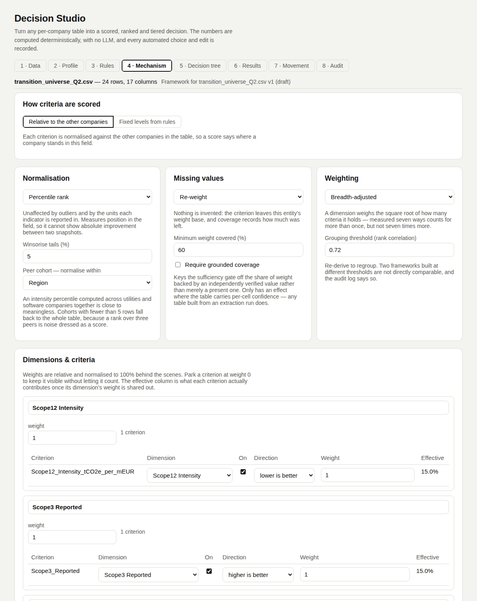

Mechanism
You decideDecides how criteria become a score: the scale, how values are compared, which criteria are grouped, and how much each group weighs.
Scoring mode
The first choice on the tab. Everything below depends on it.
| Mode | How a criterion is scored | Use it when |
|---|---|---|
| Relative to the other companies | Normalised against the other entities in the table. A score moves when the peers change. | You want to know who stands where in this field. |
| Fixed levels from rules | Each criterion gets a level on a fixed scale (e.g. 1–7) from rules over the entity's own data. | A threshold must mean the same for everyone: "target coverage ≥ 65% is level 4". |
Normalisation (relative mode)
| Option | What it does |
|---|---|
| Percentile rank (default) | Rank within the field, 0–100. Unaffected by outliers and units. |
| Min–max | Linear between the lowest and highest value. |
| Z-score | 50 + 15 × (standard deviations from the mean), clamped to 0–100. |
| Winsorise tails | 0–20%, default 5%. Clips extremes before min–max and z-score. |
| Direction | Lower-is-better criteria are flipped to 100 − v. |
| Yes/No | Straight to 0 or 100; no winsorising. |
| A lone value | Maps to 50: with nothing to compare against, neither extreme is defensible. |
Peer cohorts
| Setting | Default | What it does |
|---|---|---|
| Normalise within | none (proposed from a segment column) | Each criterion is normalised inside its sector or region. |
| Minimum cohort size | 5 | Smaller cohorts fall back to the whole table: a percentile over three peers is noise. |
Dimensions
Correlated criteria are grouped so one theme measured many ways is not counted many times.
| Setting | What it does |
|---|---|
| Cluster threshold | Default 0.72. Two criteria join a dimension only if their Spearman rank correlation clears it. |
| Complete linkage | Every pair in a dimension must clear the threshold, so a chain of moderate links cannot merge unrelated criteria. |
| Naming | From the words members share, else the member most typical of the rest. |
| Your edits | Move a criterion between dimensions, disable it, or set its weight to 0 to park it. |
Weighting
Weights are relative; the engine normalises them to 100%.
| Preset | How weight is shared |
|---|---|
| Breadth-adjusted (default) | A dimension weighs √(criteria count), split evenly among its members. |
| Equal | Every criterion the same. |
| Discriminating power | Entropy weights: criteria that spread entities apart more get more. |
| Manual | Your numbers per dimension and criterion. |
Missing values
| Policy | A blank value… |
|---|---|
| Re-weight (default) | Leaves the entity's weight base. Nothing is invented. |
| Neutral | Counts as 50. |
| Mean | Counts as the column mean. |
| Penalise | Counts as 25. |
With require grounded coverage on, sufficiency counts only values whose confidence clears the bar (default 0.8). Needs a table with per-cell confidence.
Levels mode
Replaces normalisation and derived dimensions.
| Part | Logic |
|---|---|
| Scale | level_min..level_max, default 1–7. |
| Clusters | Named and weighted by hand. |
| Level rules | Ordered level + when conditions. The first that holds sets the level; otherwise is the fallback. |
| Blanks | A comparison with a blank never holds, so missing data never earns a level. |
| Scores | Cluster = weighted average of its levels; total = weighted average of clusters. Both on the scale. |
| Checks on save | A condition that does not parse, or a level off the scale, is refused. |
In the tool
Screenshots of Decision Studio running on the sample table, taken with the app as it is on main.


Functions applied
What runs at this step, in order, with an example. Blue rows run on GoRules ZEN; the rest is Python in backend/arp/decision/.
| Function | Engine | Example |
|---|---|---|
spearman · correlation_matrix | Python | Target ambition vs plan disclosure → 0.948, above the 0.72 threshold. |
cluster_criteria · name_cluster | Python | → Climate Lobbying group (5 criteria, weight √5 = 2.236) and Green Capex group (2, weight 1.414). |
normalise_column | Python | Meridian Steel, Scope 1+2 intensity 1,840 t/€m, lower is better, UK cohort of 4 falls back to the whole table → 4.35. |
effective_weights | Python | Breadth-adjusted → Scope 1+2 intensity 0.150; each Climate Lobbying criterion 0.067. |
entropy_weights | Python | Discriminating power → SBTi target 0.212 (highest), emissions data coverage 0.062 (lowest). |
compute_scores | Python | Kanto Heavy Industries → score 39.8, coverage 0.933. Scope 3 and SBTi each contribute −8.06. |
apply_levels → evaluate_levels | ZEN expressions | 7 when target_ambition_0_5 >= 4, 4 when >= 2, otherwise 1 → Alpina 7, Kanto 4, Zenith (blank) 1 via otherwise. |
Code and formulas
The formula each function applies, and its source as it is in the repository.
_percentile_ranksbackend/arp/decision/normalise.py:12–32p = r̄ ÷ (n − 1) × 100, where r̄ is the 0-based rank, ties sharing their average rank. One present value → 50.
Python source (21 lines)
def _percentile_ranks(values: list[float | None], indices: list[int]) -> dict[int, float]:
"""Average-rank percentiles, ties sharing a rank. A single present
value maps to the neutral midpoint rather than to 0 or 100 -- with
nothing to compare against, neither extreme is defensible."""
present = [(values[i], i) for i in indices if values[i] is not None]
if not present:
return {}
if len(present) == 1:
return {present[0][1]: NEUTRAL}
ordered = sorted(present, key=lambda pair: pair[0])
out: dict[int, float] = {}
i = 0
while i < len(ordered):
j = i
while j + 1 < len(ordered) and ordered[j + 1][0] == ordered[i][0]:
j += 1
avg = (i + j) / 2
for k in range(i, j + 1):
out[ordered[k][1]] = avg / (len(ordered) - 1) * 100.0
i = j + 1
return out_linearbackend/arp/decision/normalise.py:35–58min–max: 100 × (clip(v) − lo) ÷ (hi − lo). z-score: clip(50 + 15 × (clip(v) − mean) ÷ sd, 0, 100). lo, hi are the w and 1 − w quantiles (w = winsor %).
Python source (24 lines)
def _linear(values: list[float | None], indices: list[int], method: NormMethod, winsor_pct: float) -> dict[int, float]:
present = sorted(values[i] for i in indices if values[i] is not None)
if not present:
return {}
w = max(0.0, min(0.2, winsor_pct / 100.0))
lo, hi = quantile(present, w), quantile(present, 1 - w)
out: dict[int, float] = {}
if method == "minmax":
for i in indices:
v = values[i]
if v is None:
continue
out[i] = NEUTRAL if hi == lo else max(0.0, min(100.0, (min(max(v, lo), hi) - lo) / (hi - lo) * 100.0))
return out
winsorised = [min(max(v, lo), hi) for v in present]
mean = statistics.fmean(winsorised)
sd = statistics.stdev(winsorised) if len(winsorised) > 1 else 0.0
sd = sd or 1.0
for i in indices:
v = values[i]
if v is None:
continue
out[i] = max(0.0, min(100.0, NEUTRAL + 15.0 * ((min(max(v, lo), hi) - mean) / sd)))
return outspearmanbackend/arp/decision/normalise.py:110–129Pearson correlation of the ranks, over rows where both values exist: ρ = Σ(a − ā)(b − b̄) ÷ √(Σ(a − ā)² · Σ(b − b̄)²). Fewer than 5 shared rows → 0.
Python source (20 lines)
def spearman(a: list[float | None], b: list[float | None]) -> float:
"""Rank correlation over the rows where both columns are present.
Fewer than five shared rows returns 0 -- too little to group on."""
pairs = [(x, y) for x, y in zip(a, b, strict=True) if x is not None and y is not None]
if len(pairs) < 5:
return 0.0
def ranks(index: int) -> list[float]:
ordered = sorted(range(len(pairs)), key=lambda i: pairs[i][index])
out = [0.0] * len(pairs)
for position, i in enumerate(ordered):
out[i] = float(position)
return out
ra, rb = ranks(0), ranks(1)
ma, mb = statistics.fmean(ra), statistics.fmean(rb)
num = sum((x - ma) * (y - mb) for x, y in zip(ra, rb, strict=True))
da = sum((x - ma) ** 2 for x in ra)
db = sum((y - mb) ** 2 for y in rb)
return num / (da * db) ** 0.5 if da and db else 0.0cluster_criteriabackend/arp/decision/cluster.py:27–48Repeatedly merge the two clusters with the highest min ρ over all cross pairs, while that minimum ≥ the threshold (0.72).
Python source (22 lines)
def cluster_criteria(columns: list[str], correlations: dict[tuple[str, str], float], threshold: float) -> list[list[str]]:
"""Complete-linkage agglomerative clustering on rank correlation.
Complete, not single, linkage: every pair inside a dimension must
clear the threshold. Under single linkage a chain of moderately
correlated indicators merges into one dimension whose members may be
entirely unrelated to each other, which quietly collapses a framework
into a single weight.
"""
clusters = [[c] for c in columns]
while len(clusters) > 1:
best, bi, bj = -2.0, -1, -1
for i in range(len(clusters)):
for j in range(i + 1, len(clusters)):
link = min(correlations.get(_key(a, b), 0.0) for a in clusters[i] for b in clusters[j])
if link > best:
best, bi, bj = link, i, j
if best < threshold:
break
clusters[bi] = clusters[bi] + clusters[bj]
clusters.pop(bj)
return clustersbreadth_adjusted_weightbackend/arp/decision/weighting.py:10–15dimension weight = √(criteria count), split evenly among its criteria; all weights are then scaled to sum to 1.
Python source (6 lines)
def breadth_adjusted_weight(criteria_count: int) -> float:
"""A dimension's default weight: the square root of how many criteria
it holds. A theme measured seven ways should count for more than one
measured once -- but not seven times more, which is what an unadjusted
per-criterion weighting silently does."""
return math.sqrt(max(1, criteria_count))entropy_weightsbackend/arp/decision/weighting.py:18–39pᵢ = (vᵢ + 1) ÷ Σ(v + 1), H = −Σ pᵢ ln pᵢ, w ∝ 1 − H ÷ ln n, scaled to sum to 1.
Python source (22 lines)
def entropy_weights(normalised_minmax: dict[str, list[float | None]]) -> dict[str, float]:
"""Shannon-entropy ("discriminating power") weights: a criterion that
separates the field earns more weight than one on which everyone
scores alike.
Computed over each criterion's min-max normalised values treated as a
distribution across entities, with a +1 offset so a zero value does
not vanish from the log. Documented rather than implicit because it is
the one weighting preset whose result cannot be read off the config.
"""
weights: dict[str, float] = {}
for column, values in normalised_minmax.items():
present = [v + 1.0 for v in values if v is not None]
total = sum(present)
if len(present) < 2 or total <= 0:
weights[column] = _EPSILON
continue
entropy = -sum((v / total) * math.log(v / total) for v in present if v > 0)
divergence = 1.0 - entropy / math.log(len(present))
weights[column] = max(divergence, _EPSILON)
grand_total = sum(weights.values()) or 1.0
return {c: w / grand_total for c, w in weights.items()}compute_scoresbackend/arp/decision/scoring.py:20–104score = Σ wⱼvⱼ ÷ Σ wⱼ over the criteria used. coverage = Σ w(present) ÷ Σ w(all). contributionⱼ = wⱼ ÷ Σ w(used) × (vⱼ − 50).
Python source (85 lines)
def compute_scores(
normalised: dict[str, list[float | None]],
weights: dict[str, float],
*,
missing: MissingPolicy,
row_count: int,
confidence: dict[str, list[float | None]] | None = None,
confidence_min: float = 0.8,
) -> list[RowScore]:
"""The weighted score itself, plus the two coverage figures that decide
whether it is allowed to stand.
`coverage` is the share of total weight backed by a present value.
`grounded_coverage` is the share backed by a value whose confidence
clears `confidence_min` -- which is what separates a score resting on
independently verified extractions from one resting on the model's
unverified word for it. It is None when the source supplied no
confidence at all, because 'unknown' and 'unverified' are not the
same claim.
"""
columns = [c for c in weights if weights[c] > 0]
column_means = {
c: (statistics.fmean([v for v in normalised[c] if v is not None]) if any(v is not None for v in normalised[c]) else NEUTRAL)
for c in columns
}
has_confidence = bool(confidence) and any(c in (confidence or {}) for c in columns)
results: list[RowScore] = []
for i in range(row_count):
numerator = 0.0
weight_present = 0.0
weight_grounded = 0.0
weight_all = 0.0
weight_used = 0.0
contributions: list[CriterionContribution] = []
for column in columns:
w = weights[column]
weight_all += w
raw = normalised[column][i]
conf = (confidence or {}).get(column, [None] * row_count)[i] if has_confidence else None
low_confidence = raw is not None and conf is not None and conf < confidence_min
if raw is None:
if missing == "neutral":
value = NEUTRAL
elif missing == "mean":
value = column_means[column]
elif missing == "penalise":
value = PENALTY
else:
# "renormalise": nothing is invented -- the criterion
# simply leaves this entity's weight base.
contributions.append(CriterionContribution(column=column, normalised=None, weight=w, contribution=0.0))
continue
imputed = True
else:
value = raw
imputed = False
weight_present += w
if conf is None or conf >= confidence_min:
weight_grounded += w
numerator += value * w
weight_used += w
contributions.append(
CriterionContribution(
column=column, normalised=value, weight=w, contribution=0.0, imputed=imputed, low_confidence=low_confidence
)
)
score = numerator / weight_used if weight_used > 0 else None
for contribution in contributions:
if contribution.normalised is not None and weight_used > 0:
contribution.contribution = (contribution.weight / weight_used) * (contribution.normalised - NEUTRAL)
results.append(
RowScore(
score=score,
coverage=(weight_present / weight_all) if weight_all > 0 else 0.0,
grounded_coverage=((weight_grounded / weight_all) if weight_all > 0 else 0.0) if has_confidence else None,
contributions=contributions,
)
)
return resultsevaluate_levelsbackend/arp/decision/levels.py:62–89Each rule's when is compiled with zen.compile_expression; the first rule that holds sets the level, else otherwise.
Python source (28 lines)
def evaluate_levels(dataset: Dataset, config: MechanismConfig, profiles: dict[str, ColumnProfile]) -> tuple[list[dict[str, tuple[int | None, bool]]], int]:
"""Per row, per criterion: (level, from_default). A rule whose condition
cannot be evaluated on a row -- a comparison against a blank value,
usually -- does not match: missing data never earns a level. Returns the
levels and how many rule evaluations errored that way."""
contexts = rule_inputs(dataset, profiles)
criteria = [c for c in config.level_criteria if c.enabled]
compiled = {(c.id, i): zen.compile_expression(r.when) for c in criteria for i, r in enumerate(c.rules) if r.when.strip()}
errors = 0
out: list[dict[str, tuple[int | None, bool]]] = []
for context in contexts:
row: dict[str, tuple[int | None, bool]] = {}
for criterion in criteria:
level: int | None = None
for i, rule in enumerate(criterion.rules):
if (criterion.id, i) not in compiled: # a rule not written yet
continue
try:
hit = compiled[(criterion.id, i)].evaluate(context)
except Exception: # noqa: BLE001 - a blank the rule compares against
errors += 1
continue
if hit is True:
level = rule.level
break
row[criterion.id] = (level, False) if level is not None else (criterion.otherwise, criterion.otherwise is not None)
out.append(row)
return out, errors